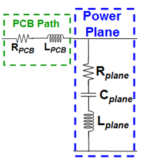
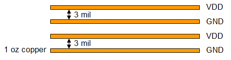

Power planes stack-up
Series resistance (R) and inductance (L) of the power plane can degrade performance, while the parallel addition of capacitance (C) with very low equivalent serial inductance (ESL) and equivalent serial resistance (ESR) can improve performance.
Increasing the size of the plane, adding multiple layers, and minimizing the distance to a ground plane, all helps to achieve low inductance (L) and low resistance (R) and to improve performance.

Recommended stack-up

Thermal temperature rise is also an issue with high current. A good ‘rule of thumb’ is to have a width of 100 mm per plane for a current of 100 A on one to two oz of copper.
We recommend a minimum of two consecutive power layers for ganged supplies and 2 mil to 4 mil distance between the power and ground planes (GND). This drastically increases capacitance and decreases inductance of the power path. In turn it significantly decreases impedance of that path for DC and AC.
Inductance is related to magnetic fields which are caused by currents flowing to the DUT and back. If they are very close side by side, their magnetic fields will compensate, thereby decreasing inductance. Compensating magnetic fields will be enhanced by
- having layers with enough width.
- having multiple layers.
- having layers close together with no other layers in between.
This also avoids possible crosstalk to other parts of the ATE-fixture.
Functional changes
- Introduced in SmarTest 7.2.1